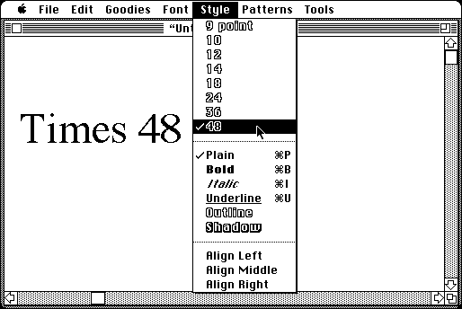

Download (external link)
TrueType_1.0.sea.bin (65K) TrueType™ 1.0
copyright: Apple Computer, Inc.
mod date: Jan 28, 1991
license: free, but don't redistribute
Allows "System 6.0.7 and System 6.0.8" to use TrueType fonts (a kind of “outline font” which, unlike bitmap fonts, can be scaled to any size). To use, extract “TrueType™ 1.0” from the archive and place it in the System Folder, and restart. Then TrueType fonts can be installed with Font/DA Mover 4.1. A few TrueType fonts are available below.

Download TrueType™ fonts (external links)
Courier.sea.bin (64K) Courier
Courier__bold_.sea.bin (62K) Courier (bold)
Helvetica.sea.bin (66K) Helvetica
Helvetica__bold_.sea.bin (65K) Helvetica (bold)
Symbol.sea.bin (57K) Symbol
Times.sea.bin (74K) Times
Times__bold_.sea.bin (73K) Times (bold)
Times__italic_.sea.bin (74K) Times (italic)
Times__bold,_italic_.sea.bin (74K) Times (bold, italic)
Here are the md5 checksums for the downloads, signed with Gryphel Key 5:
--------- GRY SIGNED TEXT --------- 06cc47368e2b3830e9e5bcb4c9eb5ed0 TrueType_1.0.sea.bin 629c03c1152e8c481c7cb76cf478c0b6 Courier.sea.bin 43c6c5d0cccf8a6362ebe873797538c0 Courier__bold_.sea.bin 864ad7662ef5b9ae5dea84bceb448b14 Helvetica.sea.bin 8095eafb5a7f96e79c2b1660194c376e Helvetica__bold_.sea.bin 1f954698b1786305d4e52d3b619f248e Symbol.sea.bin 6e1c55dd9ef827833db788600f797acf Times.sea.bin db780ac3231731695e10a0b1d2ba8528 Times__bold_.sea.bin e86ce9d180c594371c4f83e80bcf0166 Times__italic_.sea.bin 5b768aed91bc3a11a2c94feb59d35197 Times__bold,_italic_.sea.bin ------- BEGIN GRY SIGNATURE ------- Gry/4Xa8CFcUzxdN/Eev2dHwVLSr8yvCk1Sg9fi2pGpgC7+idAlSxST6tWWqmpEB ++PxEBk9CTTGsoHoGe0Llh4HfvItDMct5EJR9zfK74aiKIPawGzrNFjog1jYyYcJ 5vcqrLpPdG6m+C5LbUTYdcFCUax818LV7AL/DAuwNc2f2XJwhK8V39p1TcihBPmL -------- END GRY SIGNATURE --------